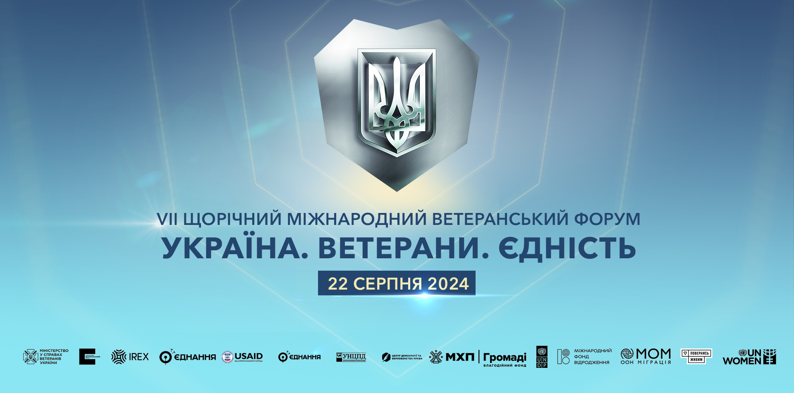

|  | ||
| Time | Event Name | Event Description |
| 08:00–9:45 | Registration of participants and welcome coffee. | |
| 9:00 | Start of the veteran business exhibition and other exhibitions | The Forum location will feature: An exhibition presenting stories of veterans’ and veteran women’s development in civilian life; Photo stands showing the path of a war veteran; Products of veteran businesses marked “Created by Defenders,” winners of the VARTO program by the UVF, samples of veteran art, etc.; Informational banners of central executive bodies (MoD, MoH, Ministry of Social Policy, Ministry of Internal Affairs, Ministry of Economy, Ministry of Education, Commissioner for Missing Persons under Special Circumstances); A location presenting successful regional projects/initiatives by regional state administrations working with veterans; A model of a veteran space with presentations of the work of specialists in supporting war veterans and demobilized persons, practical psychologists, and lawyers, business consultations on professional adaptation; A presentation of the work of administrative service centers based on the One-Stop-Shop principle;An exhibition area for adaptive sports and a photo exhibition of Invictus Games participants; A presentation of the National Military Memorial Cemetery. |
| 10:00 - 10:05 | Офіційний початок заходу
Ведучий: Narrator: Mykhailo Tyshyn President of Ukraine Volodymyr Zelensky leaves the hall accompanied by Acting Minister of Veterans Affairs of Ukraine Oleksandr Porkhun to visit the exhibition area presented on the 3rd floor, namely: A model of a real veteran space and a VR version of the space currently open and operating in the Mykolaiv region. Several specialists will work at the location. At the reception, there will be two real specialists who will consult each attendee during the event on issues related to veteran policy: from obtaining statuses to starting their own business. The location will also feature a qualified psychologist, a lawyer, a representative of Veteran Development Centers (consultations on education and retraining for veterans), and a business consultant on grants from the Ukrainian Veterans Foundation of the Ministry of Veterans Affairs. The veteran space will include a children’s leisure area for the children of Ukraine’s defenders. Veteran Businesses: Strigg Drones: Founded by Vyacheslav Strazhets, who defended Ukraine in the Avdiivka direction in 2022, where he sustained a serious injury. Since August 2023, he has established the production of FPV drones. In October 2024, he received a grant to develop his own business from the UVF under the “Varto: Golden Hands” program. The enterprise is currently developing and actively producing various types and sizes of FPV drones. TM “Vyshyvanochka”: A family veteran business founded by veteran Oleksandr Tkachuk in May 2022. In January 2023, it opened its own production (the first embroidery equipment was purchased within the framework of the “Varto 2.0” project by UVF). Currently, Vyshyvanochka is a small enterprise with 15 employees, its own offline store in Lviv, and representations in Spain (Alanya) and Canada (Toronto). In addition to ethnic clothing, they also produce UAVs. Photo Exhibition “Life” The “Life” photo exhibition consists of two parts and is dedicated to the female experience of war. ● Participants: veterans and women in military service. Each shared their experience of why they chose to defend their country. ● Mothers, wives, and children of fallen heroes tell viewers about why their loved ones chose to defend their country. This poignant exhibition combines valor and sorrow, joy and grief. The photo exhibition aims to demonstrate the experience of women whose lives have been irrevocably affected by the war. Despite losses, traumas, and pain, they live, fight, give birth to children, overcome challenges, and carry the memory of those who died for each of us. National Military Memorial Cemetery The main Military Memorial site of the country will introduce participants to the meanings and symbolism of the National Military Memorial Cemetery (NMMC). The location will feature a model of the burial sector at the National Military Memorial Cemetery and the identity of the NMMC. A white wall will also be installed where anyone can attach the name of a close person, a brother, or a sister who died fighting for their country. This improvised memorial in memory of the defenders will be preserved and transferred to the future Museum Complex at the NMMC. | Host: Introduction setting the tone and emotion of the event. |
| 10:20-10:50 | Welcome speeches from the invited guests: - Andriy Yermak, Head of the Office of the President of Ukraine - Ruslan Stefanchuk, Speaker of the Verkhovna Rada of Ukraine - Denys Shmyhal, Prime Minister of Ukraine - Rustem Umerov, Minister of Defense of Ukraine - Oleksandr Syrskyi, Commander-in-Chief of the Armed Forces of Ukraine - Denis Richard McDonough, U.S. Secretary of Veterans Affairs (online) - Andrew Murrison, UK Minister for Veterans - Oleksandr Porkhun, Acting Minister of Veterans Affairs of Ukraine |
The content and speech will focus on updating policies to today’s realities, implementing important and effective solutions, and providing tools and incentives for veterans’ development. |
| 10:50-11:05 | TED-style solo presentation by Oleksandr Porkhun, Acting Minister of Veterans Affairs of Ukraine | Presentation of key achievements and outlining the main promising directions for the formation and implementation of veteran policy within the framework of the new Strategy for Veteran Policy in Ukraine. |
| 11:05-11:07 | Video screening about the NMMC | The video focuses on the importance of creating a national memory place and forming a new culture and traditions of memory in the state. |
| 11:07– 12:07 | Start of the first panel discussion – “The State for War Veterans”
Moderator: Orest Drymalovsky, journalist, Ukrainian TV host, serviceman of the Air Assault Forces of the Armed Forces of Ukraine. Speakers: Yulia Svyrydenko, First Deputy Prime Minister of Ukraine, Minister of Economy of Ukraine Speakers: Iryna Vereshchuk, Deputy Prime Minister, Minister for the Reintegration of Temporarily Occupied Territories of Ukraine Speakers: Ihor Klymenko, Minister of Internal Affairs of Ukraine Speakers: Oleksandr Kamyshyn, Minister for Strategic Industries of Ukraine Speakers: Oksana Zholnovych, Minister of Social Policy of Ukraine |
The panel discussion will focus on discussing state-level veteran policy, including strategic documents that lay down a fundamentally new model and approaches to forming and implementing veteran policy; the coordinating role of the Ministry of Veterans Affairs in the veteran policy system; presentation of cooperation with central executive bodies, successful synergy stories, and the need to consolidate efforts in implementing state policy. |
| 12:07-12:20 | TED-style solo presentation by Artur Voityuk, war veteran, peacekeepe | Demonstration of a successful state case for a war veteran (A. Voityuk, a participant in the “Created by Defenders” program, opened his own coffee business) |
| 12:20-13:00 | Coffee break for 40 minutes. | |
| 13:00-13:05 | Video screening | Idea of the plot: to show the fate of four war veterans through their meeting on a riverbank. It’s an improvised picnic where the guys who went through the war together meet again in relatively peaceful life. To share memories and discuss plans for the future. An improvised circle of unity, brotherhood, and belief in the future. |
| 13:05-14:10 | Start of the second panel discussion – “Communities for War Veterans” Moderator: Oksana Kolyada, Ukrainian servicewoman, veteran policy expert. Speakers: Maksym Kushnir, Deputy Minister of Veterans Affairs of Ukraine Speakers: Tetiana Lomakina, Advisor – Commissioner of the President of Ukraine for Barrier-Free Issues Speakers: Serhiy Dubrov, First Deputy Minister of Health of Ukraine Speakers: Andriy Hunder, President of the American Chamber of Commerce in Ukraine Speakers: Oleksandr Prokudin, Head of Kherson Regional State Administration Speakers: Kateryna Yamshchykova, Acting Mayor of Poltava, war veteran Speakers: Ivan Slobodyanik, Executive Director of the All-Ukrainian Association of Local Governments “All-Ukrainian Association of Communities,” war veteran |
The panel discussion will focus on the implementation of veteran policy at the regional level (community readiness passports, creation of veteran spaces, available opportunities in communities for veterans, veterans’ participation in community life, the request for communities to adapt to veterans’ needs, existing state programs for war veterans, and details on how to use them, digital opportunities for veterans, and opportunities for recovery and development for veterans at the state level, the request for the next stage of veteran policy development). |
| 14:10–14:20 | Performance by PIANOБОЙ | |
| 14:20-15:05 | Coffee break for 45 minutes. | |
| 15:05-15:10 | Video screening | The video is built on the synchs of the main actors. Their remarks will form a single story of the military valor of our veterans, their return, and adaptation to post-war life. |
| 15:10-16:10 | Start of the third panel discussion – “Veteran for Veterans” Moderator: Kateryna Lutsyk, veteran of the Russian-Ukrainian war, military medic Speakers: Yulia Kyryllova, veteran, Acting Executive Director of the Ukrainian Veterans Foundation, Ministry of Veterans Affairs Speakers: Serhiy Zhukovsky, veteran, entrepreneur since 2005, mentor, founder of the veteran business “Dry Joy” Speakers: Olga Olefirenko, daughter of Captain First Rank and commander of the 73rd Marine Special Operations Center Yuriy Olefirenko, who received a grant to develop a farm from the Ukrainian Veterans Foundation and the “MHP for the Community” fund Speakers: Yuriy Gaponchuk, officer of the 50th Regiment of the National Guard of Ukraine, war veteran, participant in the Air Force Trials 2024 Speakers: Oleksandr Chamorsov, veteran, Chief Psychologist of the Crisis Support Hotline of the Ukrainian Veterans Foundation, Ministry of Veterans Affairs СSpeakers: George Chuning, U.S. veteran, Executive Director of the American-Ukrainian Veterans Bridge, former White House staff member for innovation (considering online participation) Speakers: Taras Topolia, volunteer, former volunteer of the Territorial Defense Forces of the Armed Forces of Ukraine |
The panel discussion will focus on the importance of involving war veterans in the implementation of veteran policy projects based on the peer-to-peer principle (war veterans and their family members demonstrate successful paths of rehabilitation, education, employment, and starting their own businesses) |
| 16:10–16:15 | Future veteran couple + Performance by the band “ANTITILA” | |
| 16:15 | Host announces the OFFICIAL CLOSING OF THE FORUM | |
| 11:00-16:35 | SIDE-EVENT: 1. TED-talks: “International Support: Opportunities for Developing Veteran Potential.” 2. Panel discussion “Key Role: Successful NGO Projects in Veteran Policy.” 3. Panel discussion “Impact of Adaptive Sports on Veteran Life.” |
Exchange of experience, success stories: war veterans and civil society institutions involved in government agencies that implement projects, support the veteran community, successful reintegration programs for war veterans into labor collectives by large employers, answers to questions from war veterans and their families. |